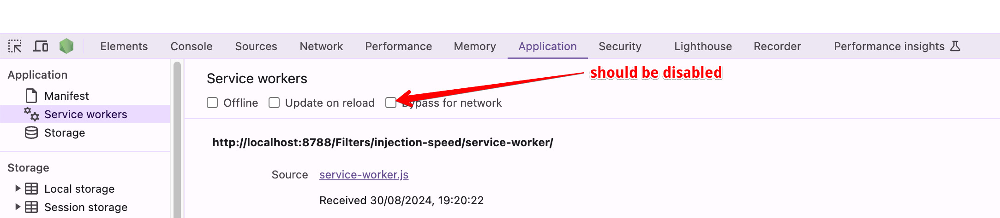

- Open DevTools.
- Go to the Application tab in DevTools.
- Ensure there is no checkbox next to the "Bypass for network" option. 
- Go back to the Console tab.
- Reload the page.
- Make sure that script and scriptlet rules were injected before the inline script at the end.